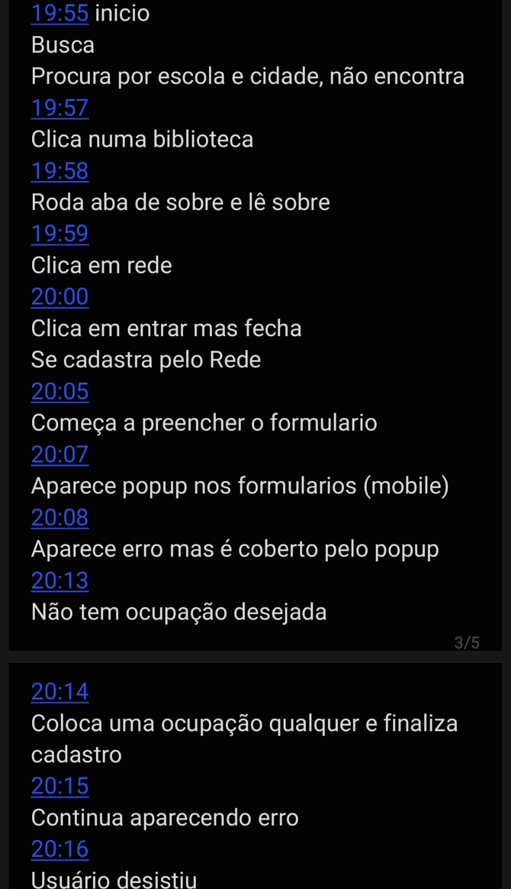
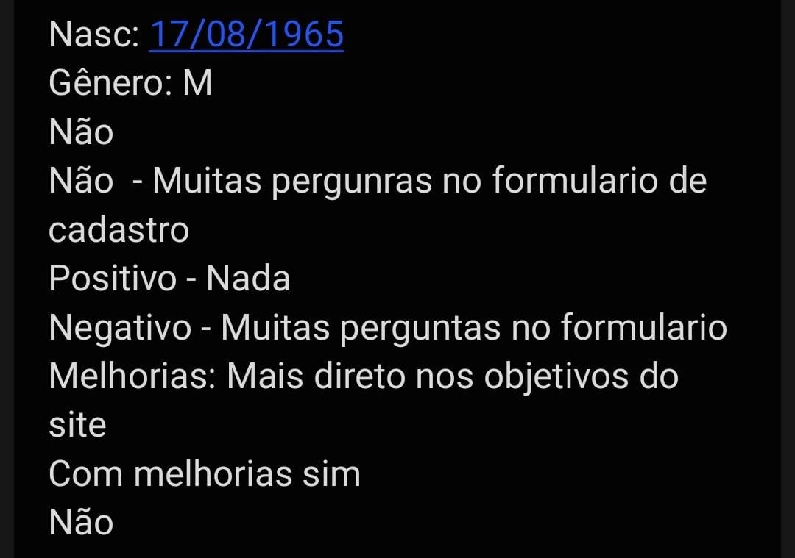

Cultura Educa Avaliação
Home
Extreme User Interview
Participante:
Luiz
Descrição:
Familiaridade com computadores baixa. Utiliza mais o celular com certa dificuldade
Data de nascimento:
17/08/1965
Gênero:
Homem cis
Você conhecia o site Cultura Educa?
Não
Você achou/acha fácil de usar?
Achou difícil, pois são muitas perguntas no formulário.
O que você achou de positivo nele?
Nada
O que você achou de negativo nele?
Muitas perguntas no formulário de cadastro
Que melhorias você gostaria que houvesse?
Ser mais direto nos objetivos do site e nas perguntas do formulário
Você recomendaria o site? Por que?
Com melhorias sim
Você pretende começar/continuar a usar?
Não
Fly on the Wall
Observação
Acessou o site pelo computador, tentou utilizar a ferramenta de Busca, procura por uma escola e cidade, mas não a encontra. Clica numa biblioteca, não encontra nenhuma forma de interagir, vai para a aba Sobre e lê, vai para a aba Rede e lê com confusão. Clica em Entrar, mas volta para Rede, onde clica em Cadastre-se. Preenche um email e senha, recebe notificação no celular sobre o cadastro, novamente na lixeira. Começa a preencher o formulário com algumas dúvidas. O componente de Público sobrepõe os campos a serem preenchidos, que são ignorados pelo usuário. Aparece um erro que também é coberto pelo componente de Público. Não encontra a ocupação real, então coloca uma qualquer e tenta finalizar cadastro, continua aparecendo erro mesmo preenchendo os campos, mas faltou colocar o ponto no mapa do endereço. 15min após o começo do cadastro o usuário desiste.

